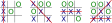

3.1. Rules of Tic Tac Toe¶
The Tic Tac Toe library provides functionality for managing the game and ensuring players only make valid moves. This requires the library’s logic to know the rules of Tic Tac Toe. The rules for Tic Tac Toe are as follows:
Play occurs on a board composed of a 3 x 3 grid of squares. The board starts empty with no marks.
The first player places their mark in one of the grid’s squares. Traditionally, the mark is the letter X.
The second player places their mark in one of the grid’s empty squares. A square that already contains a mark cannot be updated or altered. Traditionally, the second player uses the letter O as their mark.
Turns alternate between the players until the game is over.
The first player to get three of their marks in a line wins the game. That is: they have three marks in a row, column, or diagonally. Examples of winning games are shown in Figure 3.1.
Figure 3.1 Examples of winning Tic Tac Toe games showing player X winning by getting three marks a row, diagonal, and column. The red line shows the squares that contributed to the win. Notice that it is possible to get multiple sets of three marks in a row.¶
The game ends in a draw, known as a cat’s game, if no more empty squares remain and a player has failed to get three marks in a line. Examples of cat’s games are shown in Figure 3.2.

Figure 3.2 Examples of Tic Tac Toe games ending in a cat’s game. No player managed to get three marks in a line.¶